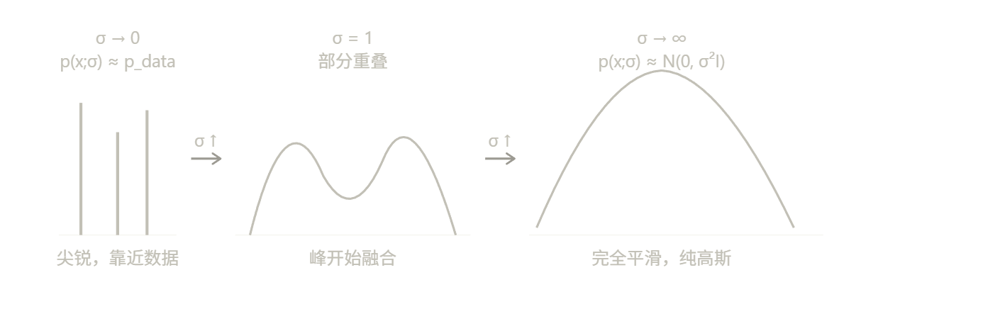
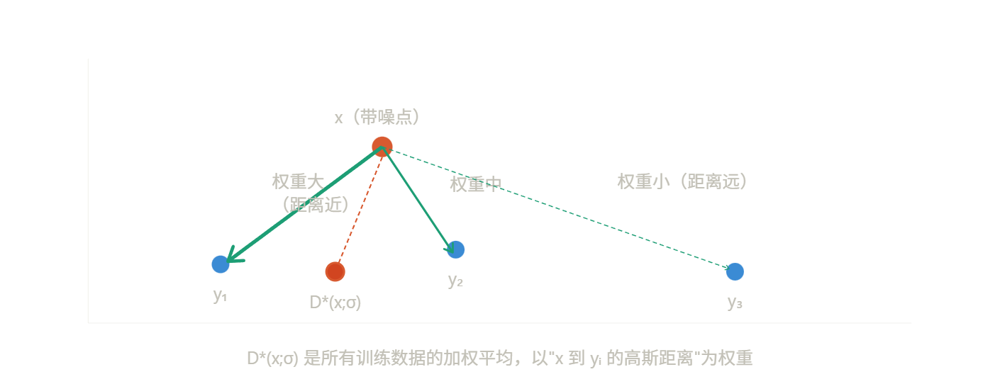
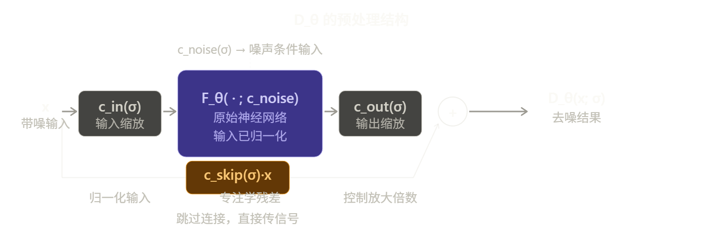

Design Space of Diffusion Model
Info
创建时间：2026-3-25 | 更新时间：2026-3-25
原文链接：Elucidating the Design Space of Diffusion-Based Generative Models
这篇论文（EDM，即 Elucidating the Diffusion Models）的核心思路是：把扩散模型的混乱理论梳理清楚，暴露出可以独立优化的设计空间，然后逐一改进。
出发点
现有文献的三个问题
2022年时，扩散模型已经很强大，但论文作者认为整个领域的文献存在一个根本性问题：理论推导和工程实现被深度绑定在一起。
具体来说，每个流派（VP、VE、DDIM）都从自己的理论出发，推导出一整套包含采样器、网络结构、训练目标的完整方案。这导致这些方案看起来像是"一体化的黑箱"——你很难判断是某个采样器更好，还是某个训练目标更好，因为它们从来没有被单独测试过。
统一框架的核心：两个函数定义一切
EDM 的关键洞察是，任何扩散模型本质上都在做同一件事：从高斯噪声出发，沿着一条路径去噪到数据分布。这条路径可以完全由两个函数描述：
- σ(t)：时刻 t 时图像中噪声的标准差，定义了"噪声日程表"
- s(t)：时刻 t 时图像的整体缩放系数
有了这两个函数，概率流 ODE 就可以写成统一的形式：
为什么 score 函数可以用去噪器表达？
这是整个框架的数学基础。可以严格证明：如果 D(x; σ) 是在噪声水平 σ 下最小化 L2 去噪误差的最优去噪器，那么：
含义很直觉：score 函数指向"把噪声去掉之后的方向"，而去噪器恰好就是在做这件事。这意味着我们只需要训练一个去噪网络 \(D_\theta\)，就能用它来驱动整个采样过程的 ODE。
σ(t) = t 为什么是最好的选择？
当 σ(t) = t 时，ODE 简化为：
这意味着从任意点出发，单步 Euler 到 t=0 直接得到去噪结果 D(x;t)。ODE 的切线方向始终指向去噪器输出，这对应轨迹近似线性，数值积分误差最小。
统一框架如何验证"正交性"？
论文做了一个关键实验：拿三个来自不同理论流派的预训练模型（VP、VE、DDIM），只换采样器，不重新训练，FID 就大幅提升。这直接证明了采样过程和训练过程确实是独立的。
ODE 统一框架
Note
score、噪声预测、去噪器三者等价，只差常数缩放和方向。这不是 EDM 的新发现，是已知结论，EDM 只是选择了用去噪器 D(x;σ) 作为核心表述对象。
Note
EDM 发表是 2022 年底，之后这个领域发展很快，主流已经不太用 f/g 这套语言了。现在大家更常见的框架是：
直接用 noise schedule 描述一切，也就是定义 $\alpha_t $（保留信号的比例）和 $\sigma_t $（噪声标准差），前向过程写成：
然后训练目标、采样器、CFG 这些全都直接从这两个量出发推导，不再绕 SDE 那一层。DDPM、DDIM、DPM-Solver、Flow Matching 的现代实现基本都是这个思路。
Flow Matching 更进一步，直接把整件事定义为学一个速度场 $v_\theta(x, t) $，从噪声到数据是一条直线插值，连 SDE 的概念都不需要，形式更干净。现在 Stable Diffusion 3、Flux 这些模型用的就是这套。
总之知道f,g是由调度器定制的超参数就行
Step 1：加噪分布 p(x; σ) 是什么
扩散模型的出发点非常简单：对一张干净图像 y，加上标准差为 σ 的高斯噪声 n，得到带噪图像 x：
所以 x 在给定 y 的条件下服从 \(\mathcal{N}(y, \sigma^2 I)\)。对所有训练数据 y 求边际，得到加噪边际分布：
直觉上这就是"把数据分布用方差 σ² 的高斯核模糊之后的结果"。σ 很小时 p(x;σ) 接近数据分布，σ 很大时接近纯高斯噪声。

Step 2：Score 函数是什么，为什么重要
Score 函数定义为对数概率密度的梯度：
它是一个向量场，在空间中每个点 x 处给出一个方向，指向该噪声水平下数据密度增大的方向。直觉上：如果你在噪声图像 x 处，score 告诉你"往哪个方向走，图像会更像真实数据"。
Score 函数有一个关键优点：不需要知道归一化常数。因为：
归一化常数是一个不依赖 x 的常数，求梯度后直接消掉了。这让 score 在实践中可计算，而直接估计概率密度 p 则因归一化困难而不可行。
Step 3：去噪器的最优解推导
现在考虑训练一个去噪器 D(x; σ)，目标是最小化 L2 去噪误差：
关键技巧：对每个固定的 x，可以独立求最优的 D(x; σ)。把期望展开写成对 x 的积分：
对固定 x，对 D(x;σ) 求导并令其为零：
解出来：
这是一个加权平均：以 x 到每个训练样本的高斯距离为权重，对所有 \(y_i\) 做加权平均。越近的样本权重越大。直觉上非常合理。

Step 4：Score 函数 = 去噪器
现在来推导 score 函数的表达式，利用 p(x;σ) 的定义：
对 x 求梯度，用到高斯分布的梯度公式 \(\nabla_x \mathcal{N}(x; y, \sigma^2 I) = \mathcal{N}(x; y, \sigma^2 I) \cdot \frac{y - x}{\sigma^2}\)：
把分子分母整理，把 \(\frac{-x}{\sigma^2}\) 提出来：
这就得到了那个关键等式：几何直觉：score = (D(x;σ) − x) / σ² 中，分子 D(x;σ) − x 就是"去噪方向"，即从当前带噪点指向去噪后目标点的向量。除以 σ² 是归一化。所以 score 就是"以 σ² 缩放的去噪方向"。
Step 5：把 Score 代入，推导统一 ODE
概率流 ODE 的原始形式（Song et al. 2021）是：
其中 f(t) 和 g(t) 是 SDE 的漂移和扩散系数，不同流派定义不同，很难比较。EDM 的做法是：把 f、g 替换成 σ(t) 和 s(t)，利用它们之间的解析关系（详见论文附录 B.2）：
代入后，再把 \(p_t(x)\) 用 \(p(x/s(t); \sigma(t))\) 表达，最终整理得到：
最后把 score 换成去噪器（Step 4 的结论）：当 σ(t) = t 时，ODE 变成了极为简洁的 dx/dt = [x − D(x;t)] / t。这个形式有一个极好的性质：从任意 x 出发，一步 Euler 到 t=0，得到的正好是 D(x;t)——也就是去噪结果。这说明 ODE 的切线方向始终精确指向去噪器输出，轨迹接近直线，数值积分误差最小，这正是论文推荐 σ(t) = t 的根本原因。
整体逻辑串联
五个步骤形成了一条完整的逻辑链：
- 加噪得到 p(x;σ)，是数据分布的高斯模糊版本
- Score 函数 ∇log p 指向密度增大方向，且不需要归一化常数
- 最优去噪器 D*(x;σ) 是训练数据的高斯加权平均，有解析解
- 代数计算直接证明 score = (D* − x)/σ²，两者严格等价
- 把 score 代入 SDE→ODE 转换，用 σ(t)、s(t) 统一参数化，得到最终 ODE
这就是为什么训练一个去噪网络 Dθ 就足以驱动整个采样过程——采样用的 score 函数和训练用的去噪目标，在数学上是完全同一件事。
三个设计维度
论文把扩散模型拆解为三个可以独立调整的模块：
① 采样过程（Sampling）
原来大家用 Euler 一阶求解器。作者发现：
- 换成 Heun 二阶方法，精度大幅提升，NFE（网络调用次数）可以大幅减少
- 时间步的选取方式（discretization）很关键，提出了基于 \(\rho\) 参数的多项式调度
- 噪声调度取 \(\sigma(t) = t\)，\(s(t) = 1\)（即 DDIM 的选择）能让 ODE 轨迹更接近直线，截断误差更小
② 随机采样（Stochastic Sampling）
在确定性 ODE 之外，引入 Langevin 式的"扰动-去噪"步骤（称为 churn）。随机性的作用是纠正早期步骤的误差。但过多随机性会导致图像退化，所以引入了几个超参数（\(S_\text{churn}\)、\(S_\text{tmin}\)、\(S_\text{tmax}\)、\(S_\text{noise}\)）来控制。
③ 预处理与训练（Preconditioning & Training）
这是论文最有系统性的贡献之一。核心想法是：
通过从第一性原理推导出 \(c_\text{skip}\)、\(c_\text{in}\)、\(c_\text{out}\) 的最优形式，使得：
- 网络输入的方差为 1
- 训练目标的方差为 1
- 网络误差的放大尽可能小
同时改进了训练噪声分布 \(p_\text{train}(\sigma)\)，从均匀分布换成对数正态分布，集中在"最有用"的中间噪声区间。还借用 GAN 中的非泄漏数据增强来防止过拟合。
Note
作者特别强调这三个维度是正交的（orthogonal）。验证方式是：
- 先把别人的预训练模型拿来，只换采样器，FID 就大幅提升（证明采样和训练无关）
- 再用改进的训练流程重新训练，进一步提升
- 每步改动都有消融实验对应
预处理和训练
问题的根源：直接训练 D(x;σ) 很难
回顾一下，我们要训练的是去噪器 \(D_\theta(x; \sigma)\)，输入是带噪图像 \(x = y + n\)，目标是输出干净图像 \(y\)。
问题在于输入的统计性质随 σ 剧烈变化：
σ 很小时输入方差 ≈ \(\sigma_\text{data}^2\)，σ 很大时输入方差 ≈ \(\sigma^2\)，两者可以相差几个数量级。同一个网络要处理方差从 0.002 到 80 的输入，训练极不稳定。
输出也有类似问题：之前的方法（DDPM 系）让网络预测噪声 \(\varepsilon\)，写成去噪器的形式就是 \(D_\theta(x;\sigma) = x - \sigma F_\theta(\cdot)\)。当 σ 很大时，网络输出的任何小误差都会被 σ 倍数放大。
四个预处理函数
EDM 在网络 \(F_\theta\) 外面包一层预处理，把去噪器写成：

四个函数各司其职：\(c_\text{in}\) 归一化输入，\(c_\text{out}\) 控制输出放大倍数，\(c_\text{skip}\) 提供跳连让网络只需学残差，\(c_\text{noise}\) 把 σ 映射成网络的条件输入。
从第一性原理推导四个函数
Note
"第一性原理"（first principles）这个词在物理学里的意思是：不依赖经验公式或前人结论，直接从最基础的定义和约束出发推导答案。
EDM 的"第一性原理"具体就是两条约束：
- 网络输入的方差 = 1（训练稳定的标准条件）
- 训练目标的方差 = 1，且网络误差被放大得尽量少
有了这两条约束，\(c_\text{in}\)、\(c_\text{skip}\)、\(c_\text{out}\) 都是解方程解出来的，不是试出来的。
EDM 的做法不是经验调参，而是给每个函数一个明确的优化目标，然后解析求解。
推导 \(c_\text{in}\)：让网络输入方差为 1
推导 \(c_\text{skip}\) 和 \(c_\text{out}\)：让训练目标方差为 1，且网络误差放大最小
把 \(D_\theta\) 的定义代入训练损失，网络 \(F_\theta\) 实际在学的目标是：
要让这个目标方差为 1：
同时希望 \(c_\text{out}\) 尽量小（网络误差放大最少），对 \(c_\text{skip}\) 求导令其为零：
$\(\boxed{c_\text{skip}(\sigma) = \frac{\sigma_\text{data}^2}{\sigma^2 + \sigma_\text{data}^2}, \qquad c_\text{out}(\sigma) = \frac{\sigma\cdot\sigma_\text{data}}{\sqrt{\sigma^2 + \sigma_\text{data}^2}}}\)$\(c_\text{skip}\) 的行为很有直觉意义：σ 很小时接近 1，网络几乎直接透传输入，只需学微小的去噪残差；σ 很大时接近 0，跳连贡献少，网络自己负责预测去噪结果。这和人类直觉完全一致——噪声小的时候输入本来就很干净，不需要大动作。
把预处理代入训练损失，\(F_\theta\) 实际优化的是：
权重设计：令 \(\lambda(\sigma) = 1/c_\text{out}(\sigma)^2\)，有效权重变成 1，所有 σ 的初始损失相等，训练更稳定。
噪声分布 \(p_\text{train}(\sigma)\)：这是第四个改进。用均匀分布采样 σ 是浪费的——极低和极高的 σ 对最终图像质量贡献很少，中间区域才是关键。为什么极端 σ 的训练价值低？
- 极低 σ：噪声几乎不存在，去噪是平凡问题，学不到什么
- 极高 σ：最优去噪器输出始终是数据集均值，没有图像具体内容可学
所以 EDM 用 \(\ln\sigma \sim \mathcal{N}(P_\text{mean}, P_\text{std}^2)\)（\(P_\text{mean}=-1.2, P_\text{std}=1.2\)）把训练集中在中间最有信息量的区间。这和 SD3 的 logit-normal 思路完全一致，都是同一个洞察。
最后一个改进是把 GAN 里的非泄漏数据增强搬到扩散模型。
普通数据增强（比如随机翻转）会把增强后的分布泄漏到生成结果里——模型会生成镜像的人脸或文字。EDM 的做法是：对训练图像做增强，但把增强参数 a 也作为条件输入给网络，推理时 a 固定为零（无增强）。网络学会了"给定无增强条件时生成无增强图像"，获得了增强带来的正则化效果却没有泄漏。
综合效果有几个值得注意的地方：
Config D（预处理）本身 FID 变化不大，但它的贡献是让训练更稳定，为 E 的损失改进创造了条件——没有 D，E 的改进会不稳定。
Config E（损失权重 + 噪声分布）是最大的单次跳跃，VP 从 2.09 跳到 1.88，VE 从 2.64 跳到 1.86。这说明"把训练注意力集中在有用的噪声区间"是最核心的改进。
Config F 之后 VP 和 VE 的 FID 完全相同（1.79），说明 VP 和 VE 的差距完全来自训练设置，而不是架构本质差异。
小结
预处理这部分的核心思路是一句话：从第一性原理推导每个设计选择，而不是经验调参。
四个预处理函数都有明确的推导目标：\(c_\text{in}\) 保证输入单位方差，\(c_\text{skip}\) 和 \(c_\text{out}\) 联合保证训练目标单位方差且误差放大最小，\(c_\text{noise}\) 是经验选择。log-normal 噪声分布同样有清晰的理论依据：集中在训练信息量最大的区间。
这套分析框架和 SD3 的 logit-normal 思路、RF 的 velocity prediction 都是同源的——都在问同一个问题：怎么让网络在训练时把注意力放在真正重要的地方。